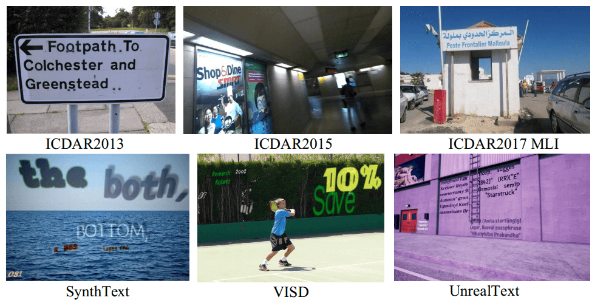
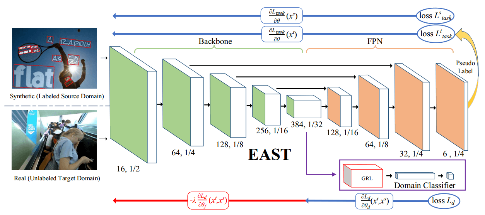
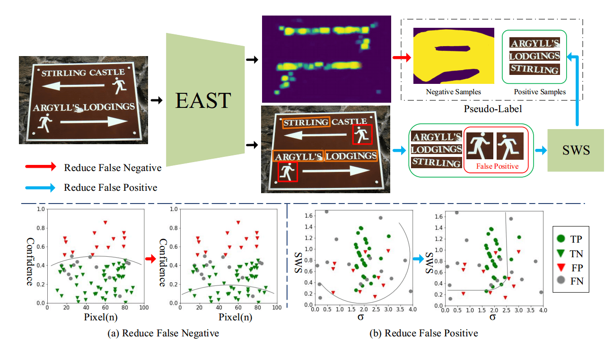
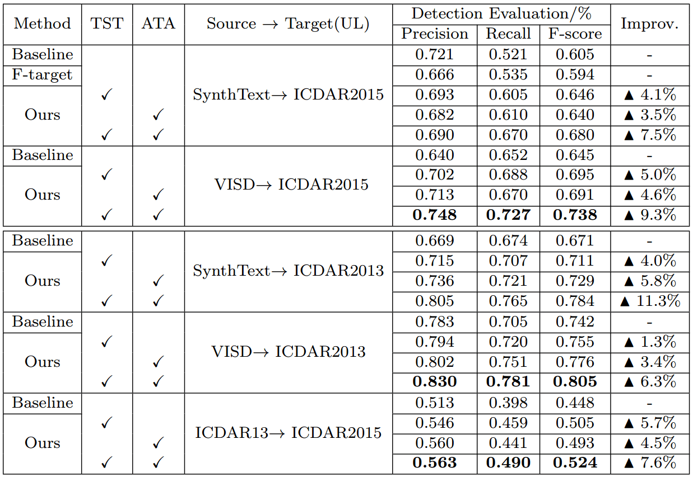

资源
全文
Abstract
为了处理场景文本识别中合成数据集和真实数据集中领域分布不匹配的问题：本文介绍了：
- 一种**用于领域自适应场景文本检测的文本自训练（a text self-training, TST）**方法和
- **对抗性文本实例对齐（adversarial text instance alignment, ATA）**方法。
- ATA 通过以对抗性的方式训练域分类器来帮助网络学习域不变特征。
- TST 减少了假阳性（FP）和假阴性（FNs）因不准确的伪标签而产生的不良影响。
结果表明，该方法的有效性提高了 10%，对领域自适应场景文本检测具有重要的探索意义。
1 Introduction
介绍了场景文本在合成数据集中的应用：
- SynthText
- VISD
- UnrealText
尽管合成数据提供了在训练场景文本检测器时以低注释成本和高标记精度代替真实图像的可能性，但许多先前的工作也表明，由于一种被称为“域偏移”的现象，仅使用合成数据进行训练会降低真实数据的性能。

与常见对象不同，在现实世界场景中，文本的形状、颜色、字体、大小和方向更加多样，这导致合成数据和真实数据之间存在较大的领域差距。
因此，当仅从合成数据向真实数据应用模型学习时，模型的性能显著下降。
为了解决域转移问题，我们提出了一种用于场景文本检测的合成到实域自适应方法，旨在通过使用合成数据和未标记的真实数据来有效提高模型在真实数据上的性能。本文提出了一种文本自训练（TST）方法和对抗性文本实例对齐（ATA）方法来减少域偏移。
-
Self-training 在领域自适应公共对象检测和语义分割方面取得了良好的效果。然而，据我们所知，具有更多样的情况和复杂背景的场景文本检测任务尚未朝着这个方向进行探索。为了更好地将自训练应用于场景文本检测，TST 用于抑制伪标签中出现的假阳性和假阴性的不利影响。
-
此外，我们首先利用 Adversarial learning 帮助模型学习场景文本的判别特征。对抗性学习已被证明在领域自适应图像分类和常见对象检测等任务中是有效的。因为大多数场景文本检测器都是单阶段检测器，因为它们没有区域建议过程，所以我们建议 ATA 以对抗性训练的方式对齐文本实例的判别特征。
全文贡献：
-
我们引入了文本自训练（TST），通过最小化不准确的伪标签的不利影响来提高域自适应场景文本检测的性能。
-
我们提出了**对抗性文本实例对齐（ATA）**来帮助模型学习领域不变特征，这增强了模型的泛化能力。
-
我们首先介绍了一种用于场景文本检测的合成到实域自适应方法，该方法将知识从合成数据（源域 source domain）转移到实数据（目标域 target domain）。
通过场景文本检测转移任务的大量实验（例如，SynthText → ICDAR2015）对所提出的方法进行了评估。实验结果证明了该方法对解决场景文本检测的域偏移问题的有效性，对域自适应场景文本检测具有重要的探索意义。
2 Related Work
2.1 Scene Text Detection
介绍了场景文本识别的著名模型：
传统方法：
- SWT
- MSER
深度学习方法：
- Textboxes++
- EAST
- PixelLink
- PSENet
- WeText
- WordSup
2.2 Domain Adaptation
领域自适应减少了训练和测试数据之间的领域差距。
2.3 Self-Training
先前的工作使用 self-training 来弥补分类信息的缺乏。
3 Proposed Method
在本节中，将分析由域偏移引起的问题。此外，我们还介绍了 TST 和 ATA 的原理，以及如何使用它们进行域自适应。为了评估我们的方法，采用 EAST 作为基线。
3.1 Problem and Analysis
尽管合成场景文本数据可以以多样化的外观和准确的地面实况注释自动生成，但由于合成数据集和真实数据集之间存在显著的领域偏移，因此仅用合成数据训练的模型不能直接应用于真实场景。
从概率的角度来看问题更清楚。
- 我们将合成数据域称为源域，将真实数据域称之为目标域。
- 场景文本检测问题可以被视为学习后验 ，其中 是指图像特征， 是文本实例的预测边界框。
- 使用贝叶斯公式，后验 可以分解为：
在这项任务中，我们假设两个域的先验概率 是相同的。 是指 的条件概率，这意味着在预测结果为真的情况下学习真实特征的可能性。我们还认为 对于两个域是相同的。因此，后验概率的差异是由先验概率 引起的。换句话说，为了检测文本实例，检测结果的差异是由域变化特征引起的。为了提高泛化能力，模型应该学习更多的域不变特征，无论输入图像属于哪个域，都保持相同的 。
在 EAST 模型中，图像特征 是指从主干输出的特征。因此，特征图应该在源域和目标域之间对齐（即，）。为了实现这一目标，ATA 被提议调整这些特性，更多细节将在下一小节中介绍。
3.2 Adversarial Text Instance Alignment
采用 ATA 来帮助网络学习域不变特征。在 EAST 模型中，图像特征 是指骨干的特征图输出。
为了在源域和目标域之间对齐特征 ，使用域分类器来混淆特征域。
特别地，为每个输入图像训练域分类器，并预测图像所属的域标签。我们假设该模型使用输入样本 ，其中 是某个输入空间。 表示第 个训练图像的域标签，其中 用于源域， 用于目标域。 是域分类器的输出，并且我们使用交叉熵作为损失函数：

为了学习领域不变特征，我们以对抗性的方式优化参数。通过最小化上述域分类损失来优化域分类器的参数，并且通过最大化该损失来优化基础网络的参数。更详细地说，在 EAST 的主干和域分类器之间添加了梯度反向层（GRL），并且当通过 GRL 层时，梯度的符号被反转。
特征金字塔网络（FPN）和骨干网在训练阶段都最小化了 EAST 的原始损耗 。 具体表示 EAST 中的分数图损失和几何图形损失。 任务表示在目标域中使用伪标签进行训练， 任务表示在源域中进行训练。因此，不同参数空间的不同训练目标：
其中 ，， 是主干、域分类器和 FPN 的参数空间。总体训练目标如下：
其中 是权衡参数，我们在所有实验中将其设置为 0.2。通过优化损失，网络可以学习更多的文本域不变特征，更好地从合成数据转换为真实数据。
3.3 Text Self-Training
先前的工作已经表明了自我训练对领域适应的有效性。然而，自我训练的两个主要问题仍有待进一步探索：伪标签中出现的假阳性（）和假阴性（）。不正确的伪标签会对我们的网络造成非常严重的负面影响。为了克服这些问题，TST 旨在最大限度地减少 和 的不利影响。
3.3.1 Reducing False Negatives.
使用了一种弱监督方式来最大限度地减少假阴性的影响。如 EAST[47]中所定义，原始分数图损失为：
L_s=-\sum_{i\in Pos}\beta Y^*log\widehat{Y}-\sum_{i\in Neg}(1-\beta)(1-Y^*)(1-\widehat{Y}) 其中 \widehat Y=F_s 是分数图的预测， 是基本事实。
虽然网络是通过反向传播学习背景损失（即负面例子）来优化的，但在伪标签中出现的 误导了网络。我们假设 主要是通过硬负挖掘来选择的，例如模糊的文本和与背景相似的不寻常字体。为了减少 的不利影响，我们忽略了一些有可能成为置信度得分的前景的背景例子。
EAST 的负面例子是像素图，一个像素更有可能被视为负面像素，而相应的置信度得分更高。
因此，我们选择置信度得分最低的负样本像素（例如，）的一部分作为最终的负示例，在图中表示为 \widehat{Neg}/3（红线）。相应的数学表达式为 \widehat{Neg}=\eta Neg，其中 在所有实验中都设置为 。对于那些具有高置信度分数的像素，网络不会优化该部分损失。最后，修改后的损失函数定义为：
\begin{aligned}L_{sw}&=-\sum_{i\in Pos}\beta Y_i^*log\widehat{Y}-\sum_{i\in\widehat{Ne}g}(1-\beta)(1-Y_i^*)(1-\widehat{Y})\end{aligned}3.3.2 Reducing False Positives.
与假阴性相对应的是，假阳性也会对网络造成严重干扰。自然场景中的一些图案和设计极易被识别为文本，从而导致伪标签不准确。取支持区域可靠分数（SRRS），我们提出了一种更合理的笔划宽度分数（SWS），该分数利用笔划宽度变换（SWT）来评估文本实例的预测框。

Down：我们给出了伪标签的样本空间表示。（a）：薄弱的训练可以有效地过滤掉假阴性。
（b）：假阳性通过笔划宽度和 SWS 的标准偏差（σ）过滤掉。
4 Experiments
通过将场景文本检测器从合成数据集转移到真实数据集来评估所提出的方法。我们采用了几种纯合成数据和真实场景数据（即 SynthText 和 ICDAR2015），它们具有共同的注释风格（即单词级别）
4.1 Dataset and Experimental Settings
4.1.1 Pure Synthetic Datasets.
- SynthText
- VISD
4.1.2 Real Datasets.
- ICDAR2015
- ICDAR2013
4.1.3 Implementation Details.
在所有实验中，我们使用 EAST 作为基础网络。在原始论文之后，输入的大小被调整为 ，我们应用了原始论文中使用的所有扩充。该网络使用由 12 个图像、6 个来自源域的图像和其他 6 个来自目标域的图像组成的批量输入进行训练。Adam 优化器被用作我们的学习率方案。
所有实验都使用了相同的训练策略：
（1）用 ATA 对网络进行 80k 次迭代的预训练，以学习域不变特征；
（2）使用预训练的模型为目标域中的每个图像生成相应的伪标签（即伪边界盒标签和负样本图），然后用生成的伪标签对预训练模型进行微调。
在生成伪标签的过程中，我们将笔划宽度消除参数的 1 和 2 分别设置为 3.0 和 0.30。所有实验均在常规工作站上进行（CPU:Intel（R）Core（TM）i7-7800X CPU@3.50 GHz；
4.2 Performance Comparison and Analysis
4.2.1 Synthetic→ICDAR2015 Transfer.
4.2.2 Synthetic→ICDAR2013 Transfer.
4.2.2 Synthetic→ICDAR2013 Transfer.
4.3 Ablation Study
4.3.1 Component Analysis.
4.3.2 Parameter Sensitivity on TST.
4.3.3 Qualitative Analysis.

5 Conclusions
在本文中，我们首先介绍了一种合成到实域的自适应方法用于场景文本检测，它传递来自合成数据的知识（来源域）转换为真实数据（目标域）。所提出的文本自我训练（TST）有效地最大限度地减少了假阴性和假阳性对伪标签和对抗性文本实例对齐（ATA）帮助网络以对抗性的方式学习更多的域不变特征。我们用 EAST 在几种常见的合成和实数上对所提出的方法进行了评估数据集。实验表明，我们的方法对合成到真实的转移文本检测任务有很大的改进。